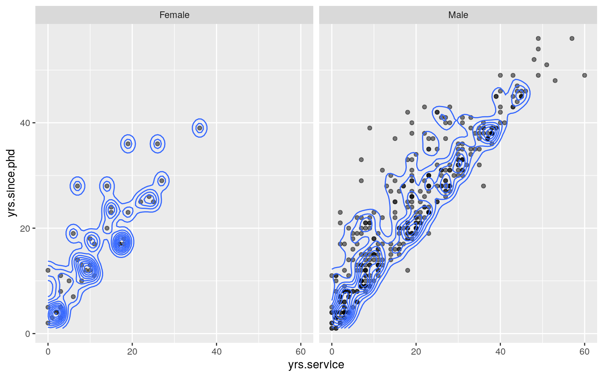
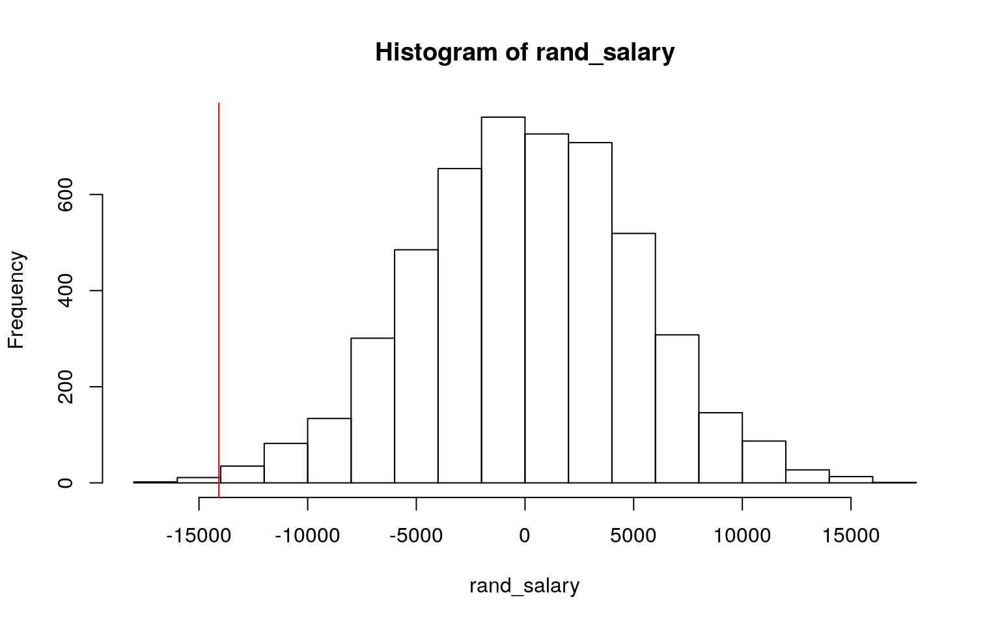
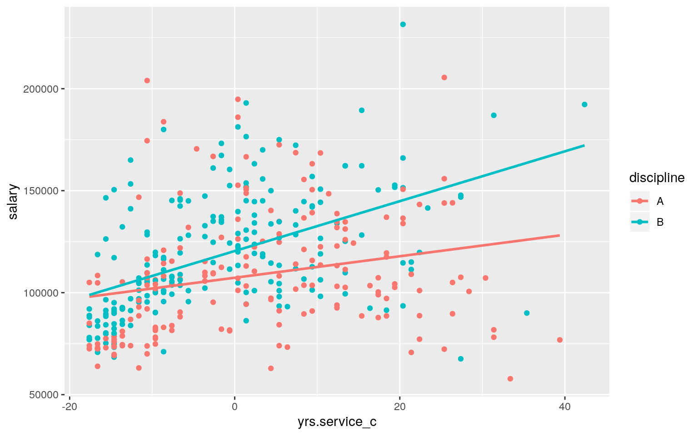
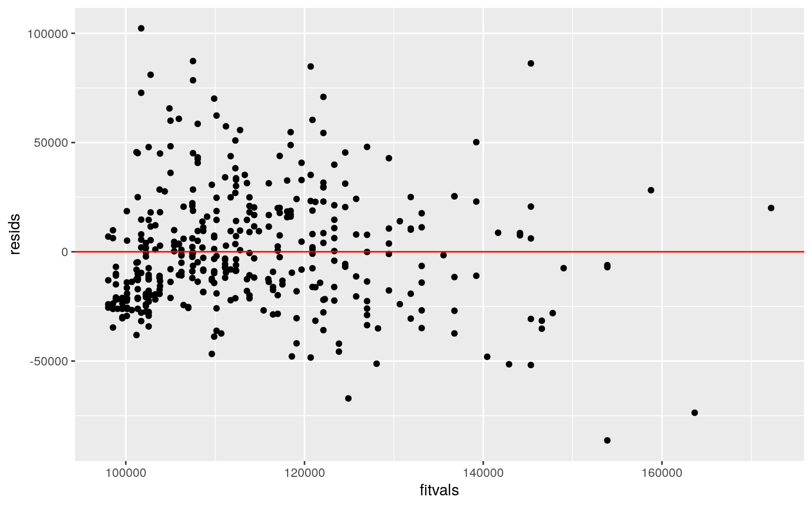
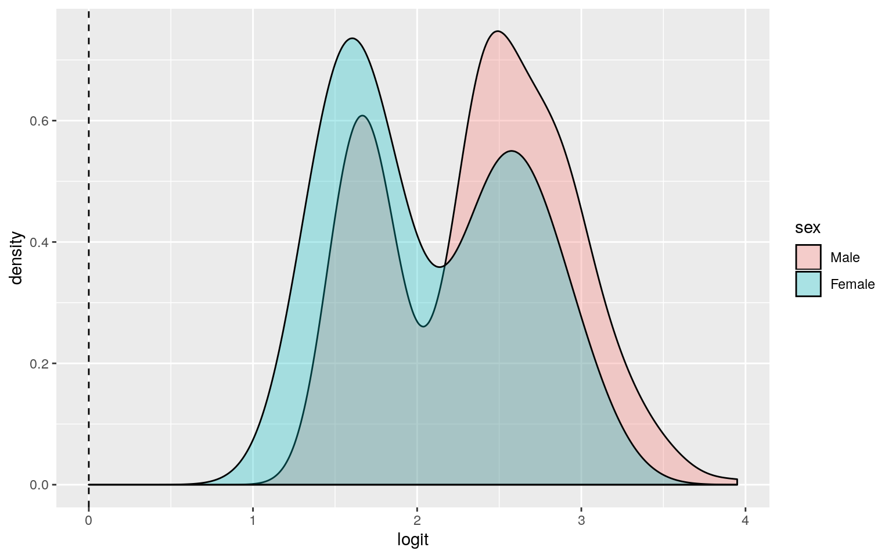
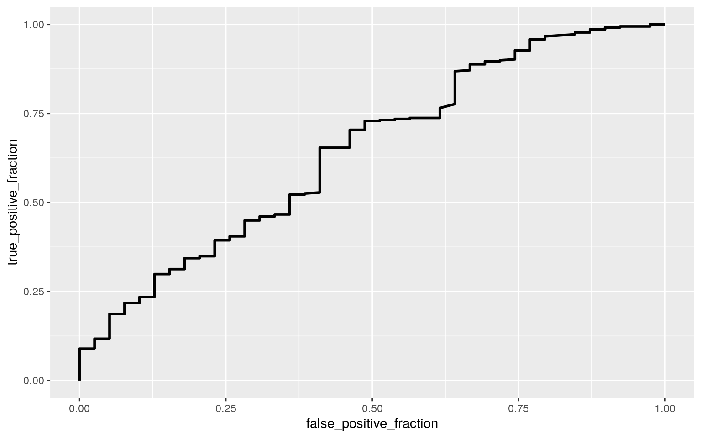

The dataset I have chosen for Project 2 is called “Prof_Salary,” which was acquired from the R dataset list provided on the website: https://vincentarelbundock.github.io/Rdatasets/datasets.html. This dataset contains information about the nine-month academic salary for Professors in a U.S. college during the years 2008-2009 in order to monitor salary differences between male and female faculty members. This data frame contains 397 observations and 6 variables. The variable “rank” is a factor with 3 levels representing the type of Professors: Assistant Professor (AsstProf), Associate Professor (AssocProf), and Professor (Prof); the variable “discipline” is a factor with 2 levels representing the type of deparment: Theoretical Department (A) and Applied Department (B); the variable “yrs.since.phd” is a numeric that measures the years since acquiring a PhD; the variable “yrs.service” is a numeric that measures the years of teaching service at the college; the variable “sex” is a factor with 2 levels: Male and Female; and the variable “salary” is a numeric that measures the nine-month salary in dollars.
Prof_Salary <- read.csv("Professor_Salary.csv")#MANOVA
manova1<-manova(cbind(salary, yrs.since.phd, yrs.service)~sex, data=Prof_Salary)
summary(manova1)## Df Pillai approx F num Df den Df Pr(>F)
## sex 1 0.032223 4.3618 3 393 0.004884 **
## Residuals 395
## ---
## Signif. codes: 0 '***' 0.001 '**' 0.01 '*' 0.05 '.' 0.1
' ' 1#Univariate ANOVAs
summary.aov(manova1)## Response salary :
## Df Sum Sq Mean Sq F value Pr(>F)
## sex 1 6.9800e+09 6980014930 7.7377 0.005667 **
## Residuals 395 3.5632e+11 902077538
## ---
## Signif. codes: 0 '***' 0.001 '**' 0.01 '*' 0.05 '.' 0.1
' ' 1
##
## Response yrs.since.phd :
## Df Sum Sq Mean Sq F value Pr(>F)
## sex 1 1456 1455.91 8.9424 0.002961 **
## Residuals 395 64310 162.81
## ---
## Signif. codes: 0 '***' 0.001 '**' 0.01 '*' 0.05 '.' 0.1
' ' 1
##
## Response yrs.service :
## Df Sum Sq Mean Sq F value Pr(>F)
## sex 1 1583 1583.27 9.5622 0.002127 **
## Residuals 395 65403 165.58
## ---
## Signif. codes: 0 '***' 0.001 '**' 0.01 '*' 0.05 '.' 0.1
' ' 1#Post-hoc t-tests
pairwise.t.test(Prof_Salary$salary,Prof_Salary$sex,
p.adj="none")##
## Pairwise comparisons using t tests with pooled SD
##
## data: Prof_Salary$salary and Prof_Salary$sex
##
## Female
## Male 0.0057
##
## P value adjustment method: nonepairwise.t.test(Prof_Salary$yrs.since.phd,Prof_Salary$sex,
p.adj="none")##
## Pairwise comparisons using t tests with pooled SD
##
## data: Prof_Salary$yrs.since.phd and Prof_Salary$sex
##
## Female
## Male 0.003
##
## P value adjustment method: nonepairwise.t.test(Prof_Salary$yrs.service,Prof_Salary$sex,
p.adj="none")##
## Pairwise comparisons using t tests with pooled SD
##
## data: Prof_Salary$yrs.service and Prof_Salary$sex
##
## Female
## Male 0.0021
##
## P value adjustment method: none#Type 1 error and bonferroni correction
(1-0.95^7)*100## [1] 30.166270.05/7## [1] 0.007142857The overall MANOVA is significant as the p-value (0.005) is below 0.05, indicating that at least 1 of the 3 response variables show a mean difference across levels of sex. The univariate ANOVAs for salary (F(1,395) = 7.738, p = 0.006), years since PhD (F(1,395) = 8.942, p = 0.003), and years of service (F(1,395) = 9.562, p = 0.002) were all significant, indicating that at least one sex differs for each response variable. Because a total of 7 hypothesis tests were performed (1 MANOVA, 3 ANOVAs, and 3 t-tests), the overall type I error rate is 30.2% and the adjusted significance level used to keep the overall type I error rate at 0.05 is 0.007. Based on the post-hoc t-tests, male and females significantly differ from each other in terms of salary (p = 0.006), years since PhD (p = 0.003), and years of service (p = 0.002) after adjusting the significance level.
#MANOVA Assumptions
#Multivariate normality
ggplot(Prof_Salary, aes(x = yrs.service, y = yrs.since.phd)) +
geom_point(alpha = .5) + geom_density_2d(h=5) + facet_wrap(~sex)
#Homogeneity of covariances
covmats <- Prof_Salary %>% group_by(sex) %>% do(covs=cov(.[c(3,4,6)]))
for(i in 1:2){print(as.character(covmats$sex[i])); print(covmats$covs[i])}## [1] "Female"
## [[1]]
## yrs.since.phd yrs.service salary
## yrs.since.phd 95.73009 73.96626 157464.8
## yrs.service 73.96626 77.67341 127174.7
## salary 157464.75776 127174.65722 673512912.3
##
## [1] "Male"
## [[1]]
## yrs.since.phd yrs.service salary
## yrs.since.phd 169.9496 156.9950 155826.8
## yrs.service 156.9950 174.9333 123426.5
## salary 155826.8010 123426.5068 926406546.1Based on the multivariate plot, the assumption of multivariate normality is not met as the plot does not look normal for the variables. Based on the covariance matrix, the assumption of homogeneity of within-group covariance matrices is not met either. The other assumptions of random samples, independent observations, linear relationships among DVs, no extreme univariate/multivariate outliers, and no multicollinearity are likely to have been met.
#Actual mean difference
Prof_Salary %>% group_by(sex) %>%
summarize(means=mean(salary)) %>%
summarize(`mean_diff:`=diff(means))## # A tibble: 1 x 1
## `mean_diff:`
## <dbl>
## 1 14088.#Permutation test
set.seed(348)
rand_salary<-vector()
for(i in 1:5000){
new<-data.frame(salary=sample(Prof_Salary$salary),sex=Prof_Salary$sex)
rand_salary[i]<-mean(new[new$sex=="Male",]$salary) - mean(new[new$sex=="Female",]$salary)}
#2-tailed P-value
mean(rand_salary > 14088.01 | rand_salary < -14088.01)## [1] 0.005#Plot of null distribution/test-statitic
{hist(rand_salary); abline(v = -14088.01, col="red")}
A randomization test was performed to test the association between salary and sex to see if there was a difference in mean salary between males and females. The null hypothesis states that the mean salary is the same for males and females, while the alternative hypothesis states that the mean salary is different for males and females. The actual mean salary difference between males and females is $14,088.01. The p-value for the permutation test is 0.005, which is significant since it is less than 0.05. The plot of the null distribution shows the actual mean difference (red line) at the tail end of the plot, which looks strange if there was actually no relationship between the variables. The probability of observing a mean difference as big as 14,088.01 under the randomization distribution is 0.005, thereby rejecting the null hypothesis.
Prof_Salary$yrs.service_c <- Prof_Salary$yrs.service - mean(Prof_Salary$yrs.service, na.rm=T)
fit<-lm(salary ~ yrs.service_c*discipline, data=Prof_Salary)
summary(fit)##
## Call:
## lm(formula = salary ~ yrs.service_c * discipline, data =
Prof_Salary)
##
## Residuals:
## Min 1Q Median 3Q Max
## -86326 -19779 -4999 16091 102274
##
## Coefficients:
## Estimate Std. Error t value Pr(>|t|)
## (Intercept) 107317.9 2076.8 51.674 < 2e-16 ***
## yrs.service_c 526.8 150.1 3.510 0.000499 ***
## disciplineB 13102.5 2813.7 4.657 4.4e-06 ***
## yrs.service_c:disciplineB 695.2 215.9 3.220 0.001388 **
## ---
## Signif. codes: 0 '***' 0.001 '**' 0.01 '*' 0.05 '.' 0.1
' ' 1
##
## Residual standard error: 27540 on 393 degrees of freedom
## Multiple R-squared: 0.1795, Adjusted R-squared: 0.1733
## F-statistic: 28.67 on 3 and 393 DF, p-value: < 2.2e-16The intercept coefficient shows that the predicted salary for the reference group, which is discipline A, is $107,317.9 for average years of service. The “yrs.service_c” coefficient represents the slope, where every 1 additional year of service in discipline A results in the salary increasing by $526.8. The “discipline B” coefficient shows that the salary in discipline B is $13,102.5 higher than in discipline A for average years of service. The “yrs.service_c:disciplineB” coefficient shows that discipline B’s slope is bigger by a factor of $695.2 compared to discipline A’s slope for the effect of average years of serivice on salary.
#Linear Regression ggplot
fit %>% ggplot(aes(yrs.service_c, salary, color=discipline))+ geom_point() + geom_smooth(method="lm",se=F)
The reggresion plot shows that there is a significant interaction, where discipline B has a steeper slope than discpline A. Therefore, there is a stronger relationship between salary and discipline B.
#Assumptions of Linear Regression
#Linearity
resids<-lm(salary~yrs.service_c*discipline, data=Prof_Salary)$residuals
resids<-fit$residuals
fitvals<-fit$fitted.values
ggplot()+geom_point(aes(fitvals,resids))+geom_hline(yintercept=0, color='red')
#Normality
shapiro.test(resids)##
## Shapiro-Wilk normality test
##
## data: resids
## W = 0.96471, p-value = 3.482e-08#Homoskedasticity
library(lmtest)
library(sandwich)
bptest(fit)##
## studentized Breusch-Pagan test
##
## data: fit
## BP = 16.114, df = 3, p-value = 0.001074The scatterplot of the fitted values and the residuals shows that there is a linear relationship between each predictor and response variable. The p-value for the Shapiro-Wilk normality test is less than 0.05 (3.482e-08), rejecting the null that the true distribution is normal. The Breusch-Pagan test shows that homoskedasticity is not met as the p-value is less than 0.05 (0.001), rejecting the null hypothesis that the data is homoskedastic. Therefore, the linearity assumption is met while the normality and homoskedasticity assumptions are not met.
#Regression with robust SE
summary(fit)##
## Call:
## lm(formula = salary ~ yrs.service_c * discipline, data =
Prof_Salary)
##
## Residuals:
## Min 1Q Median 3Q Max
## -86326 -19779 -4999 16091 102274
##
## Coefficients:
## Estimate Std. Error t value Pr(>|t|)
## (Intercept) 107317.9 2076.8 51.674 < 2e-16 ***
## yrs.service_c 526.8 150.1 3.510 0.000499 ***
## disciplineB 13102.5 2813.7 4.657 4.4e-06 ***
## yrs.service_c:disciplineB 695.2 215.9 3.220 0.001388 **
## ---
## Signif. codes: 0 '***' 0.001 '**' 0.01 '*' 0.05 '.' 0.1
' ' 1
##
## Residual standard error: 27540 on 393 degrees of freedom
## Multiple R-squared: 0.1795, Adjusted R-squared: 0.1733
## F-statistic: 28.67 on 3 and 393 DF, p-value: < 2.2e-16coeftest(fit, vcov=vcovHC(fit))##
## t test of coefficients:
##
## Estimate Std. Error t value Pr(>|t|)
## (Intercept) 107317.93 2215.51 48.4393 < 2.2e-16 ***
## yrs.service_c 526.83 178.83 2.9459 0.003412 **
## disciplineB 13102.45 2932.43 4.4681 1.033e-05 ***
## yrs.service_c:disciplineB 695.17 261.15 2.6620 0.008088
**
## ---
## Signif. codes: 0 '***' 0.001 '**' 0.01 '*' 0.05 '.' 0.1
' ' 1When recomputing the regression using heteroskedasticity robust standard errors, the p-values increased for yrs.service_c (0.0005 to 0.003), disciplineB (4.4e-06 to 1.033e-05), and yrs.service_c:disciplineB (0.001 to 0.008), while the p-value for the intercept remained about the same (< 2e-16 to < 2.2e-16). All slope values remained the same and are significant as their corresponding p-values are less than 0.05. The proportion of the variation in the outcome explained by this model is 0.1795.
set.seed(348)
samp_distn<-replicate(5000, {
boot_dat <- sample_frac(Prof_Salary, replace=T)
fit<-lm(salary ~ yrs.service_c*discipline, data=boot_dat)
coef(fit)
})
samp_distn %>% t %>% as.data.frame %>% summarize_all(sd)## (Intercept) yrs.service_c disciplineB
yrs.service_c:disciplineB
## 1 2226.958 176.7043 2920.188 259.5347The bootstrap standard errors via observation resampling were calculated for the intercept (2226.96), yrs.service_c (176.70), disciplineB (2920.19), and yrs.service_c:discplineB (259.53). Compared to these values, the original standard errors are lower for the intercept (2076.80), yrs.service_c (150.10), disciplineB (2813.70), and yrs.service_c:discplineB (215.90) as more assumptions are made. Compared to the original values, the bootstrap standard errors are closer in value to the robust standard errors for the intercept (2215.51), yrs.service_c (178.83), disciplineB (2932.43), and yrs.service_c:discplineB (261.15). A higher standard error indicates a higher p-value.
#Coefficient estimates
fit1<-glm(sex ~ salary+rank, data=Prof_Salary, family=binomial(link="logit"))
coeftest(fit1)##
## z test of coefficients:
##
## Estimate Std. Error z value Pr(>|z|)
## (Intercept) 5.4961e-01 8.8493e-01 0.6211 0.5346
## salary 1.2212e-05 8.8293e-06 1.3831 0.1666
## rankAsstProf 9.4692e-02 4.8910e-01 0.1936 0.8465
## rankProf 5.7207e-01 4.8569e-01 1.1779 0.2389exp(coef(fit1))## (Intercept) salary rankAsstProf rankProf
## 1.732577 1.000012 1.099320 1.771937The intercept coefficient shows that there is not a significant effect of being an associate professor on sex (p = 0.53); the odds of being male for associate professors is 1.73. When controlling for rank, there is not a signficant effect of salary on sex (p = 0.17); for every 1 unit increase in salary, the odds of being male increases by a factor of 1.00 when controlling for rank. When controlling for salary, there is not a significant effect of being an assistant professor (p = 0.85) or being a professor (p = 0.24) on sex. When controlling for salary, the odds of being male for an assistant professor rank is 1.10 times the odds of being male for an associate professor rank. When controlling for salary, the odds of being male for a professor rank is 1.77 times the odds of being male for an associate professor rank.
#Confusion matrix
prob1<-predict(fit1,type="response")
table(predict=as.numeric(prob1>.5),truth=Prof_Salary$sex) %>% addmargins## truth
## predict Female Male Sum
## 1 39 358 397
## Sum 39 358 397#Density plot of logit
Prof_Salary$logit<-predict(fit1)
Prof_Salary$sex<-factor(Prof_Salary$sex,levels=c("Male","Female"))
ggplot(Prof_Salary,aes(logit, fill=sex)) + geom_density(alpha=.3) +
geom_vline(xintercept=0,lty=2)
#ROC Curve
library(plotROC)
ROCplot<-ggplot(Prof_Salary)+geom_roc(aes(d=sex,m=prob1), n.cuts=0)
ROCplot
#AUC
calc_auc(ROCplot)## PANEL group AUC
## 1 1 -1 0.6449291Based on the confusion matrix, the sensitivity is 1 and the specificity is 0. The AUC is calculated to be 0.645, which is poor. The ROC plot and AUC indicate that it is hard to predict sex from salary and rank.
class_diag<-function(probs,truth){
tab<-table(factor(probs>.5,levels=c("FALSE","TRUE")),truth)
acc=sum(diag(tab))/sum(tab)
sens=tab[2,2]/colSums(tab)[2]
spec=tab[1,1]/colSums(tab)[1]
ppv=tab[2,2]/rowSums(tab)[2]
if(is.numeric(truth)==FALSE & is.logical(truth)==FALSE) truth<-as.numeric(truth)-1
#CALCULATE EXACT AUC
ord<-order(probs, decreasing=TRUE)
probs <- probs[ord]; truth <- truth[ord]
TPR=cumsum(truth)/max(1,sum(truth))
FPR=cumsum(!truth)/max(1,sum(!truth))
dup<-c(probs[-1]>=probs[-length(probs)], FALSE)
TPR<-c(0,TPR[!dup],1); FPR<-c(0,FPR[!dup],1)
n <- length(TPR)
auc<- sum( ((TPR[-1]+TPR[-n])/2) * (FPR[-1]-FPR[-n]) )
data.frame(acc,sens,spec,ppv,auc)
}#10-Fold CV
set.seed(1234)
k=10
data<-Prof_Salary[sample(nrow(Prof_Salary)),]
folds<-cut(seq(1:nrow(Prof_Salary)),breaks=k,labels=F)
diags<-NULL
for(i in 1:k){
train<-data[folds!=i,]
test<-data[folds==i,]
truth<-test$sex
fit<-glm(sex~salary+rank, data=train,family="binomial")
probs<-predict(fit,newdata = test,type="response")
diags<-rbind(diags,class_diag(probs,truth))
}
summarize_all(diags,mean)## acc sens spec ppv auc
## 1 0.901859 0 1 NaN 0.6144899When predicting out of sample, the AUC decreased to 0.614. Therefore, the performance of the model is slightly worse out of sample and the drop in AUC indicates that the model is overfitting. The accuracy is 0.902, the sensitivity is still 1, and the specificity is still 0.
library(glmnet)
set.seed(1234)
fit2 <- glm(sex~., data=Prof_Salary, family=binomial(link="logit"))
x<-model.matrix(fit2)[,-1]
x<-scale(x)
y<-as.matrix(Prof_Salary$sex)
cv <- cv.glmnet(x,y,family="binomial")
lasso<-glmnet(x,y,family="binomial",lambda=cv$lambda.min)
coef(lasso)## 9 x 1 sparse Matrix of class "dgCMatrix"
## s0
## (Intercept) 2.32216016
## rankAsstProf .
## rankProf .
## disciplineB .
## yrs.since.phd .
## yrs.service 0.29818888
## salary 0.09675044
## yrs.service_c 0.02673038
## logit 0.19693719lasso_prob<-predict(lasso, newx=x, type="response")
class_diag(lasso_prob,Prof_Salary$sex)## acc sens spec ppv auc
## Female 0.09823678 1 0 0.09823678 0.3210858The non-zero coefficient estimates are Intercept, rankProf, yrs.service, and salary. The AUC after performing a Lasso regression is 0.678, which is about 0.03 higher than the AUC from the logistic regression model (0.645). Therefore, this model is performing better, although the AUC is still poor.
#10-Fold CV WITH LASSO
set.seed(1234)
k=10
Prof_Salary_new <- Prof_Salary %>%
mutate(professor=ifelse(rank=="Prof",1,0))%>%
select(sex, professor, yrs.service, salary)
data<-Prof_Salary_new[sample(nrow(Prof_Salary_new)),]
folds<-cut(seq(1:nrow(Prof_Salary_new)),breaks=k,labels=F)
diags<-NULL
for(i in 1:k){
train<-data[folds!=i,]
test<-data[folds==i,]
truth<-test$sex
fit<-glm(sex~professor+yrs.service+salary, data=train, family="binomial")
probs<-predict(fit,newdata = test,type="response")
diags<-rbind(diags,class_diag(probs,truth))
}
summarize_all(diags,mean)## acc sens spec ppv auc
## 1 0.901859 0 1 NaN 0.6414285After performing a 10-fold CV using the lasso regression, the AUC is 0.641. This is still poor, although it is about 0.3 higher than the AUC of the 10-fold CV using the logistic regression (0.614). Therefore, this model is more accurate at making out-of-sample predictions.